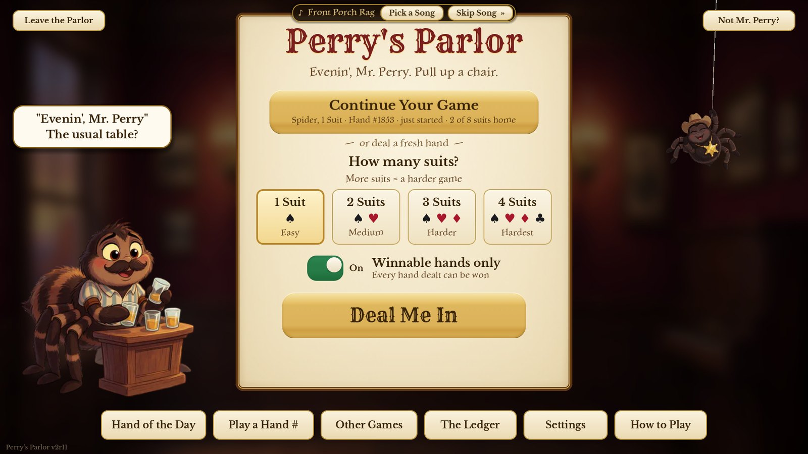
Perry's Parlor is the classic card game Spider Solitaire, dealt on green felt in an Old West saloon parlor. There's ragtime on the player piano, a cat asleep by the window, a barkeep named Mose, and a whole family of friendly spiders who drop by to celebrate when you win — but never every time.
This manual explains everything in plain words. You don't need to read it all before you play: the game is built so that nothing you do can break it, every move can be taken back, and help is always one button away. Read Getting Started and How to Play, then come back to the rest whenever you're curious.
There's also a no-install copy (Perrys Parlor v2r13.exe): double-click it to play straight away.
The barkeep asks what to call you. Type a name — "Mr. Perry", "Grandpa", anything you like — and click Pull Up a Chair. The game greets you by that name, writes it in the Ledger, and puts it in the headlines when you win.
Anyone else who plays can add their own name later, and everyone keeps their own scores (see Players and the Guest Book).
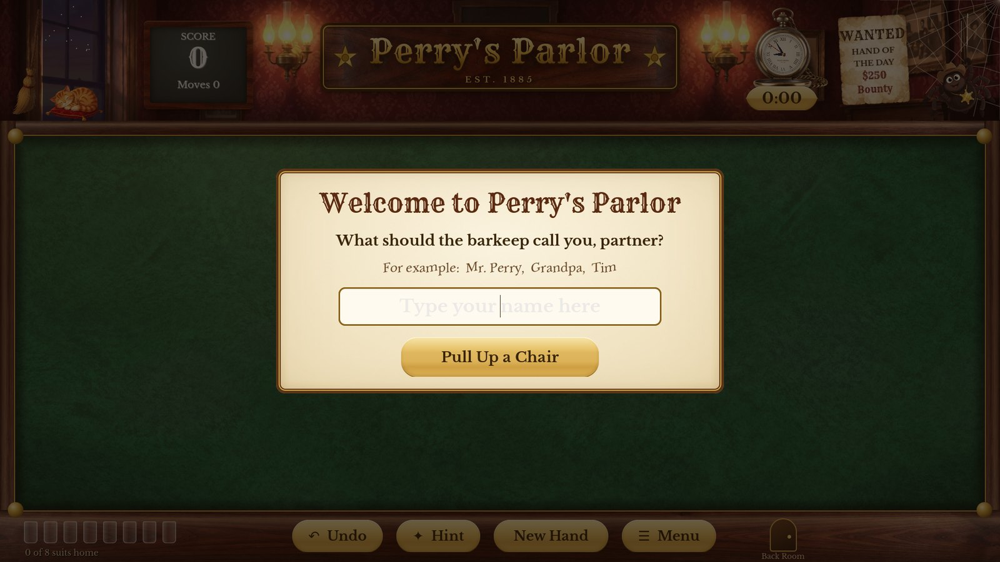
The Guest Book on the first visit
On Windows, run the new Setup the same way — your name, scores, Ledger, photos and Spider Family Album are all kept. On Android, the Play Store updates the game by itself.
Mose the barkeep says hello. When you have a game going, "Continue Your Game" is right on top.
| Button | What it does |
|---|---|
| Continue Your Game | Picks up the hand you were playing, exactly where you left it. |
| How many suits? | Choose 1 Suit (Easy), 2 Suits (Medium), 3 Suits (Harder) or 4 Suits (Hardest). 1 Suit is the classic place to start. |
| Winnable hands only | On: every hand dealt has already been solved by the computer, so it can always be won. Off: any shuffle at all, the old-fashioned way. |
| Deal Me In | Deals a fresh hand with the suits you picked. |
| Hand of the Day | Today's special hand — everyone who plays it today with the same number of suits gets the very same cards. |
| Play a Hand # | Type a hand number to play an exact deal (see chapter 8). |
| Other Games | Spiderette, Relaxed Spider, the Wanted Hand of the Day ($250), and Show Me How — watch the game play a hand by itself. |
| The Ledger | Your record: wins, streaks, best scores, rank and brass plaques. |
| Settings | Felt colour, card styles, sound, and much more (chapter 13). |
| How to Play | A one-page picture guide to the rules. Its About the Parlor button tells who made the game, and why. |
| Not Mr. Perry? | Switch to a different player, or add a new one. |
| Leave the Parlor | Closes the game. It asks first, and your hand is saved. |
The goal: build each suit in order from King down to Ace, all in one column. A finished run of thirteen cards slides off the table on its own. Clear them all and you win. (The face cards are painted frontier folk — the King of Spades is Sheriff Perry.)
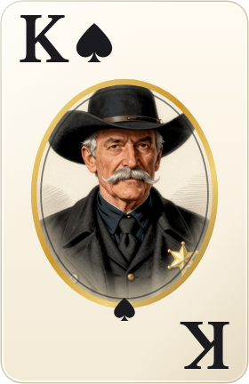
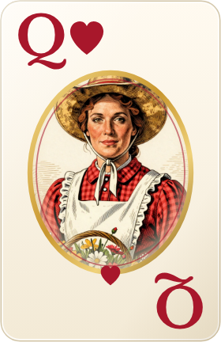
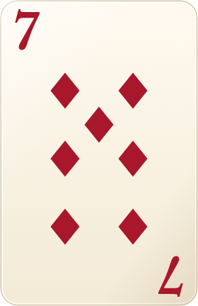
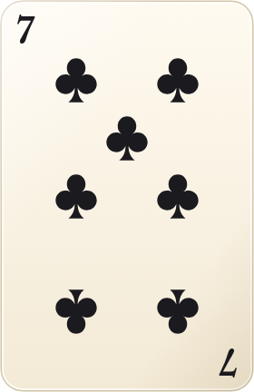
| When | Score |
|---|---|
| You start every hand with | 500 points |
| Each move, each deal, each Undo | −1 point |
| Undoing the move that finished a suit | takes its 100 back |
| Each suit you finish | +100 points |
So fewer moves means a higher score (it never shows less than 0). The brass tag under the pocket watch (the clock at the top right on a phone) times the hand: it starts with your first move or deal and pauses whenever a menu is open or you step away from the game.
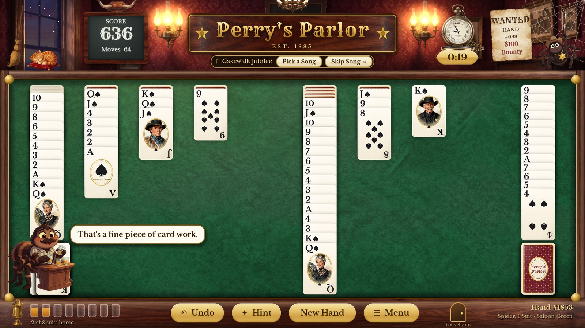
1 2 3 4 5 6 7 8 9 10 11 12 13 14Click (or tap) a card and it jumps to the best place it can go. Or drag it wherever you like — the column it can land on lights up. If a card can't move, it gives a little shake.
Changed your mind? Click Undo. It takes back moves and deals one at a time, all the way back to the start of the hand.
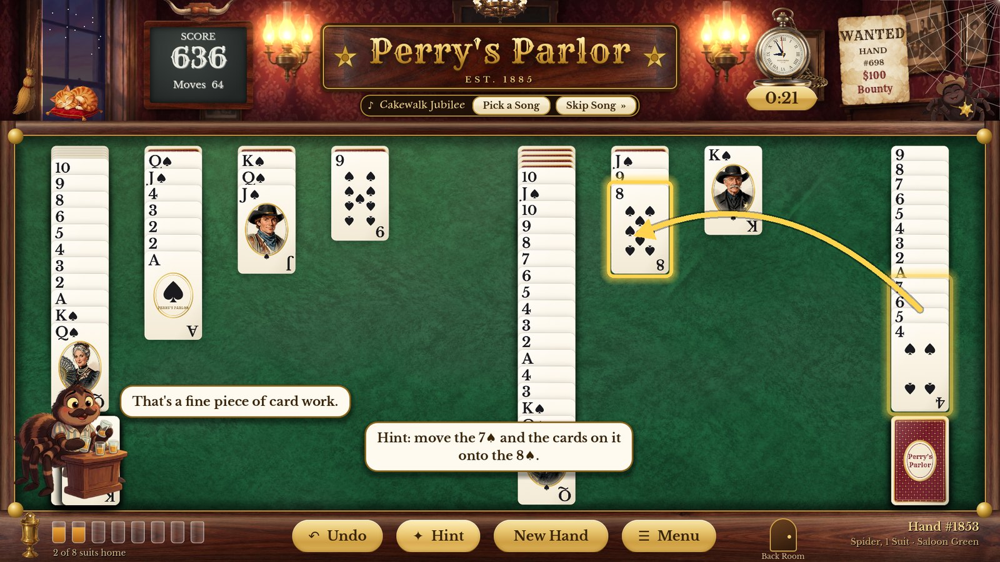
A thick gold frame shows the cards to move, a gold arrow points where they go, and a note says it in words.
If there are no moves left on the table, Hint points to the deck. If the hand is truly stuck, it says so — try Undo, or deal a fresh hand.
Near the end of a hand, when the computer can see that the rest is certain to come out, a Finish it for me button appears. Click it and the game plays out the last moves for you.
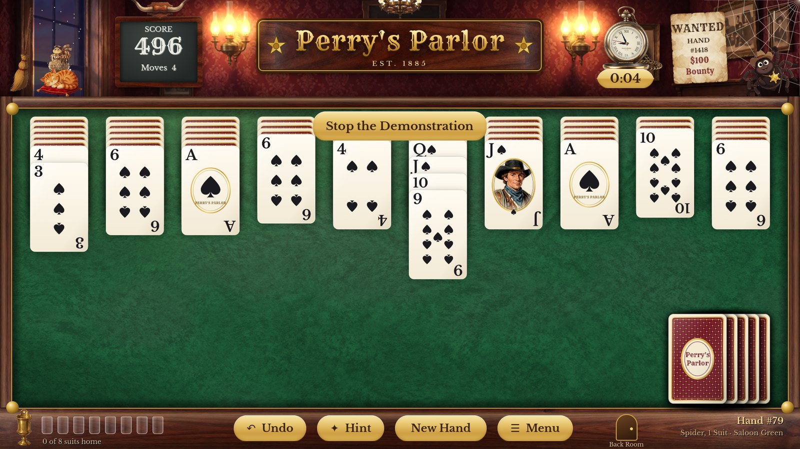
In Other Games → Show Me How (or the Show Me How button on the How to Play page), the game plays a whole hand by itself, slowly, explaining each kind of move as it goes. Click Stop the Demonstration whenever you're ready to play. A demonstration never counts in your record.
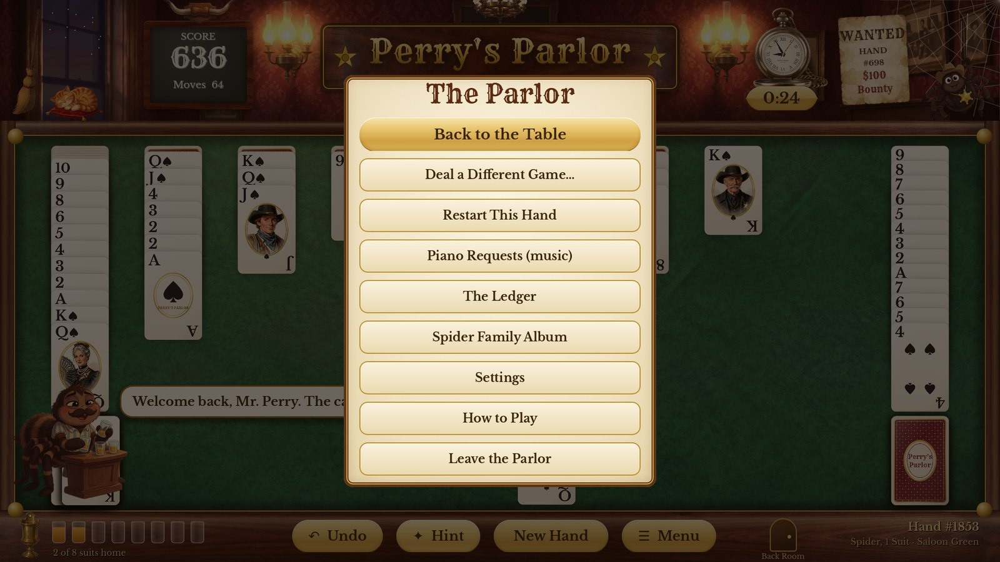
Back to the Table, Deal a Different Game, Restart This Hand (same cards from the beginning — it doesn't count as a loss), Piano Requests, The Ledger, Spider Family Album, Settings, How to Play and Leave the Parlor.
On a phone the parlor rearranges itself so the cards can be as big as possible. (On a tablet you get the full parlor with the painted wall, just like on a computer.)
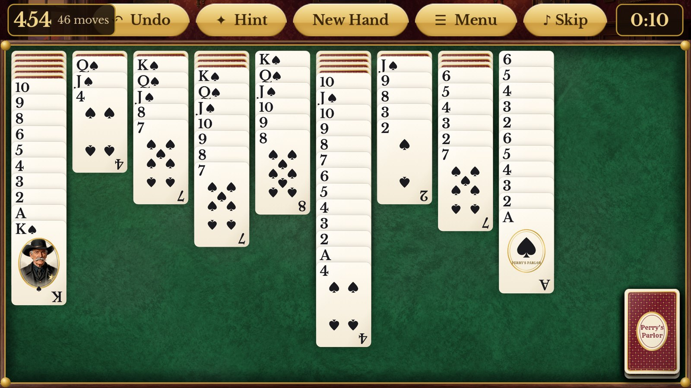
The phone table: score, buttons and clock along the top; finished suits and the deck in a lane on the right.
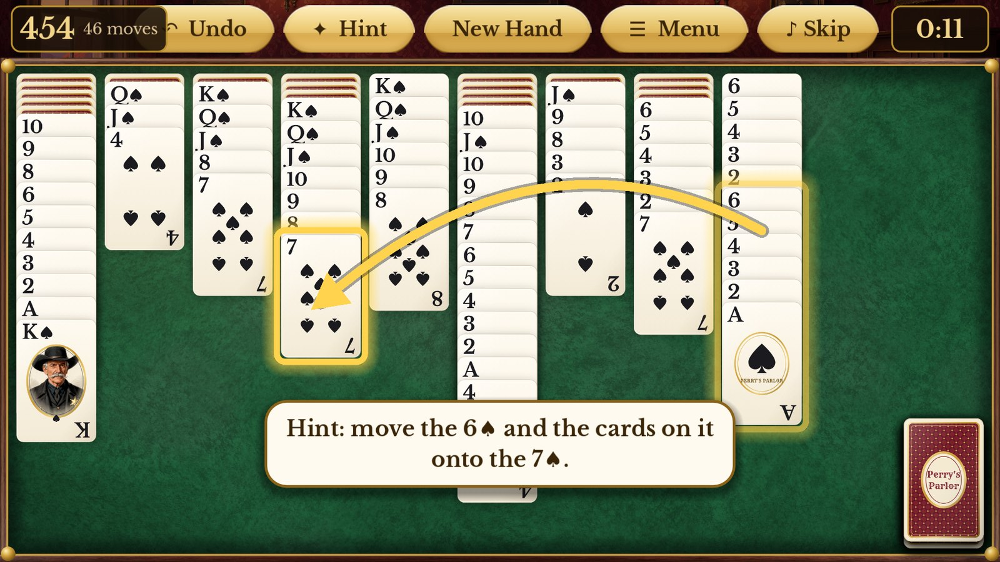
Hint on a phone
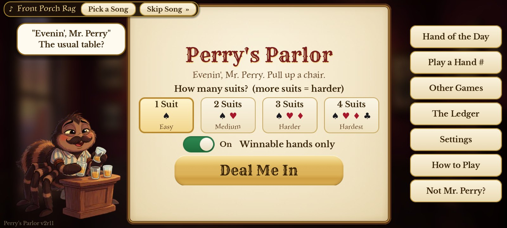
The welcome screen on a phone
| Game | What's different |
|---|---|
| Spider, 1 Suit (Easy) | All 104 cards are spades. Any run is a same-suit run, so groups move freely. The best place to start. |
| Spider, 2 Suits (Medium) | Spades and hearts. Now you have to sort the colours out. |
| Spider, 3 Suits (Harder) | Spades, hearts and diamonds. |
| Spider, 4 Suits (Hardest) | All four suits — the real test. |
| Spiderette | One deck, seven columns — a shorter, quicker game, in 1, 2 or 4 suits (with 3 picked it deals 2). Under Other Games. |
| Relaxed Spider | The same as Spider, but you may deal even when a column is empty. Under Other Games. |
With this switched on (it is, to begin with), every hand you're dealt has been solved by the computer first — thousands of them, for every kind of game. If a hand seems impossible, it isn't: try Undo, a Hint, or Restart This Hand. Switch it off on the welcome screen for a completely random shuffle.
In Settings you can choose Large Print faces, Extra-Large cards (on a computer), four-colour suits (blue diamonds, green clubs) and High contrast. See chapter 13.
Every deal has a hand number, shown at the bottom right of the table. Same number plus same number of suits means exactly the same cards — so you can race the family on the same hand, no internet needed.
Each day there's one special hand for each number of suits. Everyone who plays the Hand of the Day with the same suits gets the same cards that day — a friendly daily contest. Win it and Professor Octavius Eightlegs may stop by to congratulate you.
After a win, click Send a Telegram. The game copies a short message — your game, hand number, time, score and moves, plus a "Can you beat it?" challenge — so you can paste it into a text message or email to the family.
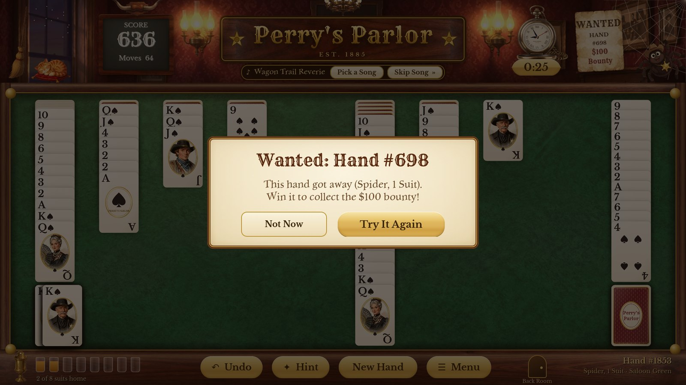
A hand you gave up on goes up on the Wanted poster on the wall. Click the poster (or Try #… Again in the Ledger) to deal that exact hand again. Win it and you collect a $100 bounty — and, the first time, the Bounty Collected brass plaque.
Every day one of the toughest winnable hands in town is wanted, matched to the number of suits you play. Everyone who plays the same suits gets the same outlaw that day. Bring it in for a $250 bounty and the Outlaw of the Day plaque. Find it on the Wanted poster (when no other outlaws are at large), in the Ledger right beside the Wanted hand (Ride Out), and in Other Games.
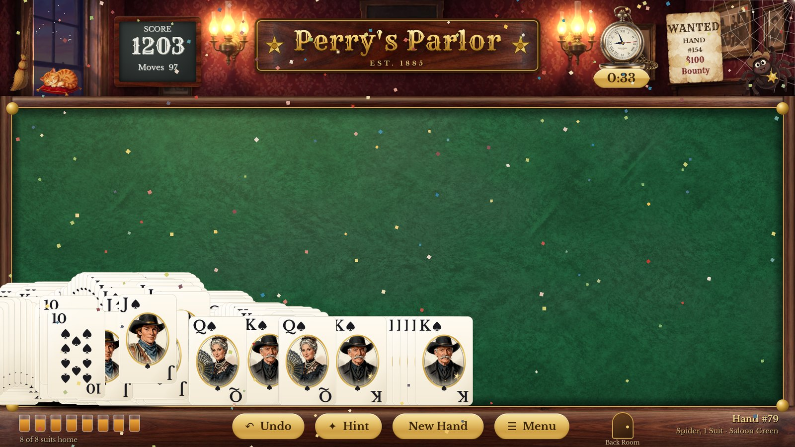
The cards bounce across the felt with confetti
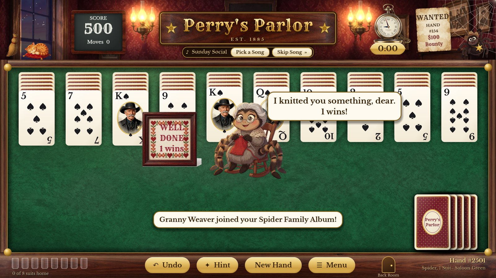
Sometimes a member of the Spider Family drops by
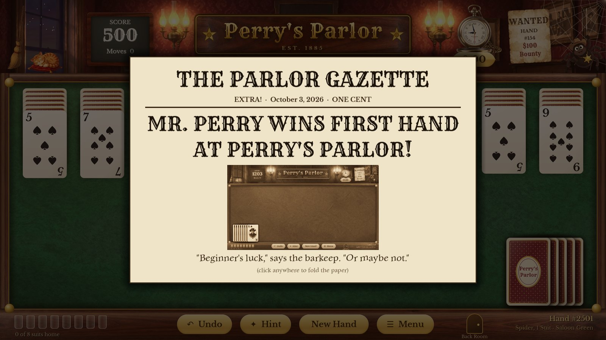
Big days make the front page of the Parlor Gazette
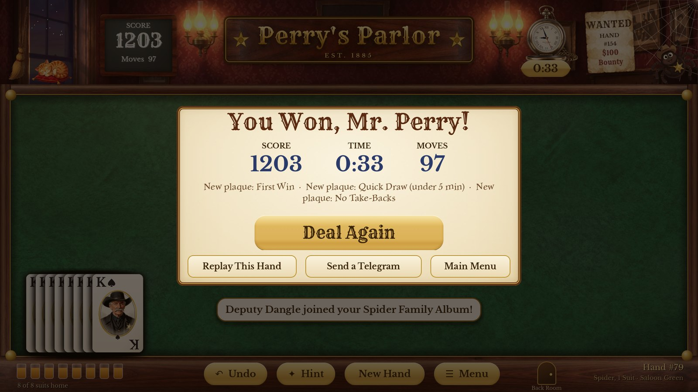
The win card: your score, time and moves
Every win in the parlor gets the bouncing-card celebration, a hoedown on the piano, and a sepia "tintype" photograph for your Scrapbook (the latest 60 are kept). Click anywhere to hurry it along. In the Back Room a win ends with a gold cascade instead.
Now and then — never every time — a spider comes to visit, and the first time you meet one they join your Spider Family Album. On special days the Parlor Gazette prints an extra edition: your first win, a new record, a promotion, a win milestone (10, 25, 50, 100 wins and on), a new parlor decoration, a bounty collected, the Outlaw of the Day, your first four-suit win, the Hand of the Day.
The win card lists your score, time and moves, any new brass plaques, and gives you three choices: Deal Again, Replay This Hand, or Send a Telegram — or go back to the Main Menu.
Thirteen spiders (and Mose) live in and around the parlor. Each one turns up for a particular reason. Collect them all in the Spider Family Album — a silhouette marks the ones you haven't met yet. Every one of them is animated: Banjo Bill strums, Granny Weaver knits, Lasso Lou twirls his rope, Little Tad jumps for joy. In the Album they hold still until you rest the mouse on one (or tap it on a phone).
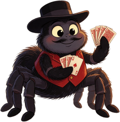
Jasper Silk — shows up for fast wins.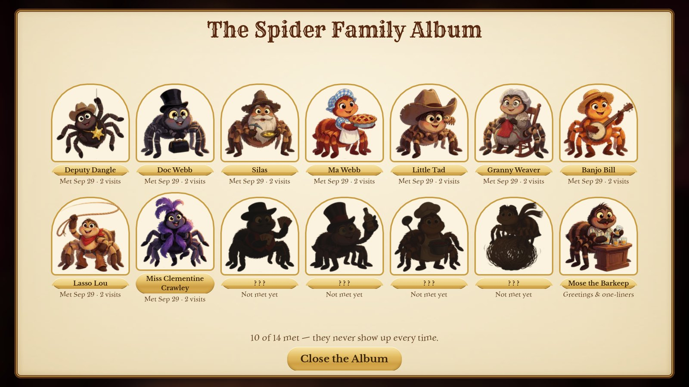
The Spider Family Album, part-way filled in
How often they visit is up to you: Settings → Spider visits → Often, Sometimes or Never.
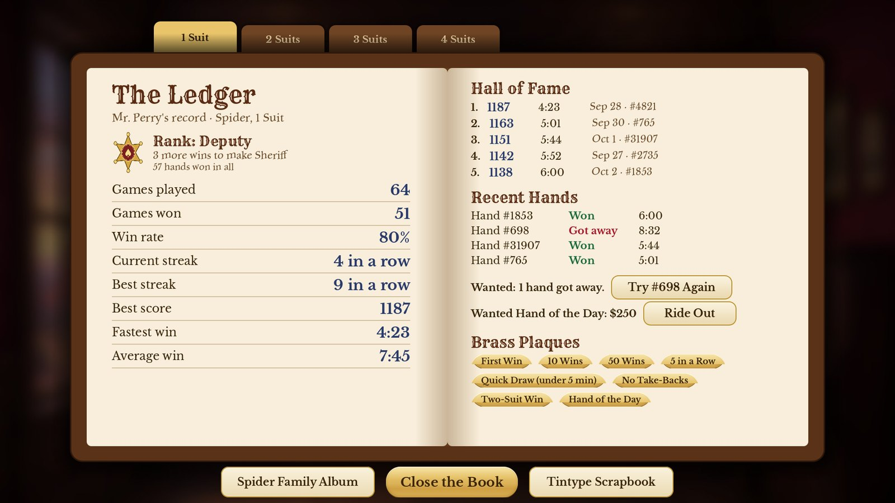
The Ledger is a leather-bound book with a tab for each kind of game. The left page shows your rank and your numbers: games played and won, win rate, current and best streak, best score, fastest win and average win. The right page holds the Hall of Fame (your five best wins), your recent hands, the Wanted list and your brass plaques.
| Rank | Total wins |
|---|---|
| Greenhorn | 0 |
| Ranch Hand | 5 |
| Wrangler | 15 |
| Deputy | 30 |
| Sheriff | 60 |
| Marshal | 100 |
| Legend of the West | 200 |
First Win · 10, 50, 100 and 250 Wins · 5 in a Row · 10 in a Row · Quick Draw (a win in under 5 minutes) · No Take-Backs (a win without Undo) · Two-, Three- and Four-Suit Wins · Hand of the Day · Bounty Collected · Outlaw of the Day · Spiderette Win
Spider Family Album — everyone you've met.
Tintype Scrapbook — a sepia photograph of every parlor win (the latest 60).
| Click | What happens |
|---|---|
| The window | Switches between day and night outside. |
| The cat | It wakes up, yawns, gives a little meow and curls back up to sleep. |
| The lamps | Off, Low, Medium and High — the lamplight on the table follows. |
| Deputy Dangle | He swings to and fro on his thread. |
| The Wanted poster | Try a hand that got away, or the Wanted Hand of the Day. |
| The song plate (under the sign) | Pick a Song or Skip Song. |
| The player piano | Opens Piano Requests, to pick a song. |
| The spittoon (from 10 wins) | Ding! |
The song plate under the sign (number 13 in chapter 4) shows what's playing. Original ragtime, waltzes and cakewalks play on the player piano, with gentler tunes in the evening and a hoedown for every win. It never plays three of the same kind of tune in a row. Turn it up, down or off in Settings.
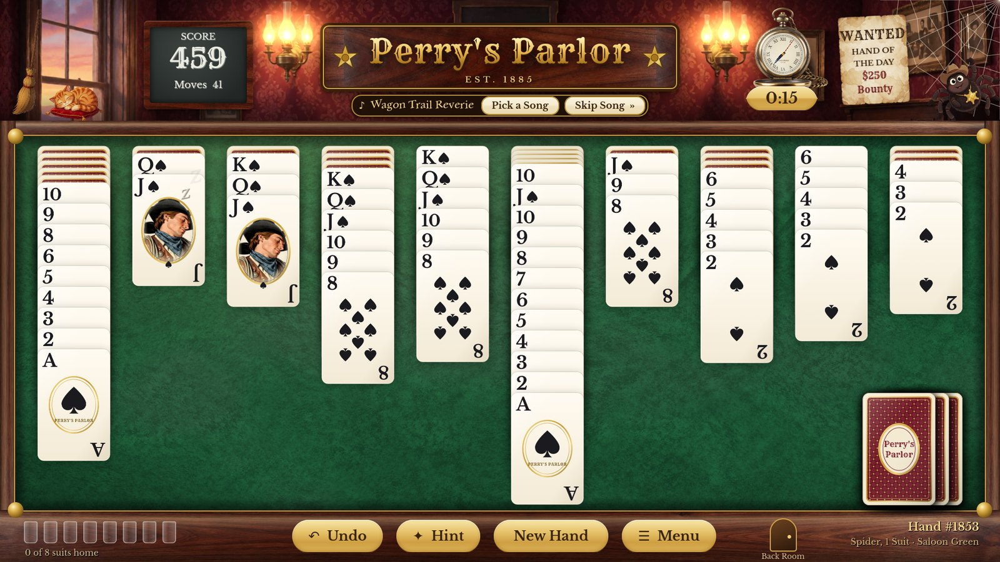
Three quiet minutes, and the Kings, Queens and Jacks nod off
Mose greets you by name, polishes his glasses and pipes up now and then. Make him Chatty, Quiet or Silent in Settings.
Leave the game alone for three minutes and the face cards that are showing close their eyes and let their heads droop, one by one, with little "z"s floating up (Frontier and Classic faces; Large Print faces stay awake). Move the mouse or touch anything and they wake up.
And for anyone who can't stand spiders: there's a secret somewhere in the parlor. Look around.
Your winnings decorate the parlor: a spittoon at 10 wins, longhorns at 25, a chandelier at 50 and a gramophone at 100 (click it for Piano Requests). With Holidays on, the parlor dresses up for Valentine's Day, the Fourth of July, Halloween, Thanksgiving and Christmas; with The 4:10 train on, a whistle sounds on the hour and a little train crosses the window (not in the Back Room or with Parlor life on Still).
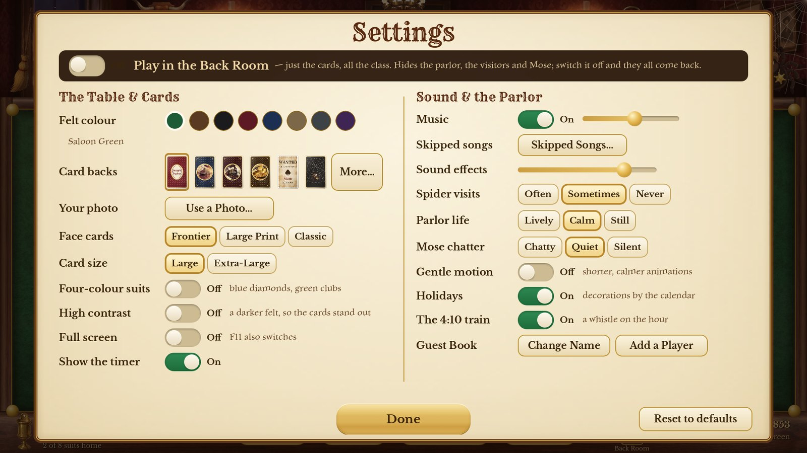
Every change happens right away and is saved by itself. Reset to defaults puts the settings back the way they started (your name, scores, photos, card back and skipped songs are kept).
| Setting | Choices |
|---|---|
| Play in the Back Room | Just the cards, all the class — see chapter 15. |
| Felt colour | Saloon Green, Saddle Brown, Midnight Black, Faro Burgundy, Riverboat Navy, Prairie Tan, Gunmetal Grey, Royal Purple. |
| Card backs | Twelve designs: Perry's Parlor Monogram, Classic Red, Classic Blue, Riverboat Gambler, Railroad, Gold Rush, Wanted Poster, Cattle Brand, Sheriff's Star, Spider Web, Golden Spider, Square Dance — click More… to see them all. |
| Your photo | Put your own pictures on the card backs (chapter 14). |
| Face cards | Frontier (painted portraits), Large Print (extra-big letters) or Classic. |
| Card size | Large or Extra-Large (computer only — a phone always uses the biggest that fits). |
| Four-colour suits | Blue diamonds and green clubs, so all four suits look different. |
| High contrast | A darker felt, so the cards stand out. |
| Full screen | Off (the usual way): the game opens in a window you can move and resize by its edges, and it remembers its size. On: it fills the whole screen. Computer only; F11 also switches. |
| Show the timer | Show or hide your time on this hand (the brass tag under the watch; the clock on a phone). |
| Music / Sound effects | Music: on or off, and how loud. Sound effects: how loud (all the way down for silence). |
| Skipped songs | Songs you took out with Skip Song → Don't Play It Again; put any of them back. |
| Spider visits | Often, Sometimes or Never. |
| Parlor life | Lively, Calm or Still — how much moves around in the parlor. |
| Mose chatter | Chatty, Quiet or Silent. |
| Gentle motion | Shorter, calmer animations: no swinging doors, and the characters hold still. |
| Holidays · The 4:10 train | Holiday decorations; a train whistle on the hour. |
| Guest Book | Change Name or Add a Player. |
Put a family photo, a pet or a favourite place on the back of every card. Go to Settings → Use a Photo… (once you've added one it's called My Photos…) and follow three steps.
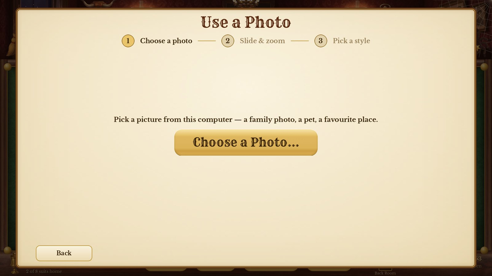
Step 1 — Choose a Photo…
Click Choose a Photo… and pick a picture. On a phone, your phone's own photo picker opens.
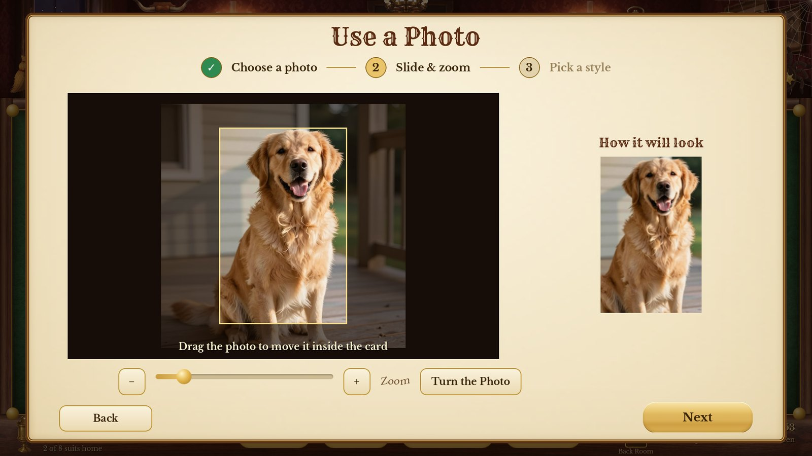
Step 2 — slide and zoom
Drag the photo so the best part sits inside the card shape. Use − and + (or pinch on a phone) to zoom. Is the picture lying on its side? Click Turn the Photo. The little card on the right shows how it will look. Click Next.
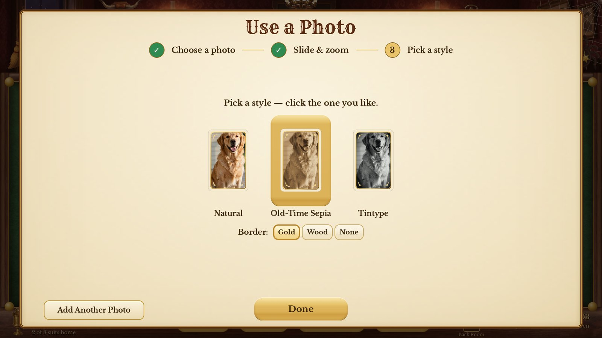
Step 3 — pick a style
Natural colour, Old-Time Sepia or Tintype, with a Gold, Wood or no border. Click Done.
Add as many photos as you like. Turn on Family Album to get a different photo on each new hand. To take a photo off the cards, open My Photos… and click Remove under it — the picture on your computer or phone itself is never touched.
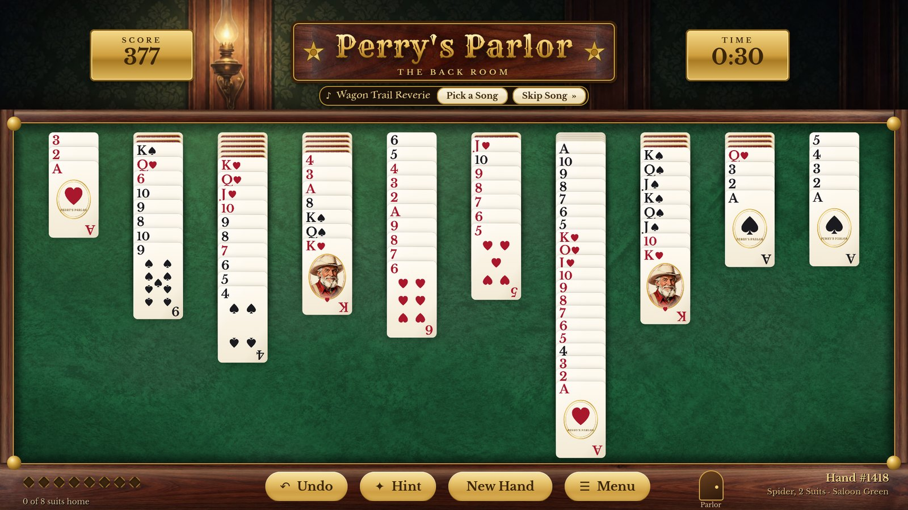
Sometimes you just want the cards. The Back Room hides the parlor, the visitors and Mose, and keeps the handsome table, the cards and the smooth animations. Wins end with an elegant gold cascade instead of the full celebration.
Switch it on or off with the little door at the bottom of the table, or with Play in the Back Room at the top of Settings. Your record and everything else stays exactly the same.
Several people can share the game, and each keeps their own name, saved hand, Ledger, plaques and Spider Family Album.
| On a computer | Does |
|---|---|
| Ctrl + Z | Undo |
| H | Hint |
| Esc | Open the menu at the table · leave a screen |
| F11 | Full screen on or off |
| On a phone | Does |
| Tap a card | Move it to the best spot |
| Drag a card | Move it where you like |
| The Back button | Close what's open · open the menu at the table |
| Slide a finger | Scroll Settings, the Ledger, How to Play and the Album |
| Pinch | Zoom a photo in Use a Photo |
| ♪ Skip (top bar) | Skip to the next song |
No. The game saves after every move. Next time, click Continue Your Game. (The one exception is a secret: if you ever Rage Quit, that hand counts as one that got away.)
With Winnable hands only on, every hand can be won. Try Hint, use Undo to back up a few moves and try another way, or Menu → Restart This Hand to start the same cards fresh (that doesn't count as a loss).
In Settings choose Large Print faces, Extra-Large cards and High contrast, and turn on Full screen.
Turn on Gentle motion, set Parlor life to Still, or play in The Back Room.
Click Skip Song on the plate under the sign, then Don't Play It Again. Bring it back any time in Settings → Skipped Songs.
Check Settings → Music is On and the slider isn't all the way down, and that your computer or phone isn't muted.
Click More info, then Run anyway. It appears because the game is from a small developer, not because anything is wrong.
The game is already running — look for it on the taskbar at the bottom of the screen.
On Windows, run the new Setup; everything you've done is kept. On Android, the Play Store updates it for you.
On Windows: Settings → Apps, find Perry's Parlor, click Uninstall. Your records are left behind in case you reinstall; to remove them too, delete the folder %APPDATA%\Godot\app_userdata\Perry's Parlor. On Android: press and hold the gold star, then Uninstall (this removes everything).
Perry's Parlor collects nothing. There's no account, no advertising, no tracking, and the game itself never uses the internet. Names, scores, settings and any photos you add stay on your own computer or phone. (On a computer, the About the Parlor page has two buttons about FaleOfaz, a care home in Utah. They open your own web browser, and only if you click them. Nothing is asked of you.) The full policy is at tcdeveloper27.github.io/perrys-parlor/privacy.html.
| Game | Perry's Parlor © 2026 Legion Software. Made for Mr. Perry, and for everyone who loves a good game of Spider. |
| Music | Original ragtime, waltzes, cakewalks and hoedowns created by Tim for Perry's Parlor. |
| Sound effects | Kenney (kenney.nl) — Casino, Interface, Impact and Music Jingles packs, CC0. Cat recordings from Wikimedia Commons, public domain. |
| Fonts | Rye and Libre Baskerville (SIL Open Font License 1.1); DejaVu Sans (Bitstream Vera license). |
| Engine | Made with the Godot Engine (godotengine.org). |
Godot Engine license: Copyright (c) 2014-present Godot Engine contributors. Copyright (c) 2007-2014 Juan Linietsky, Ariel Manzur. Permission is hereby granted, free of charge, to any person obtaining a copy of this software and associated documentation files (the "Software"), to deal in the Software without restriction, including without limitation the rights to use, copy, modify, merge, publish, distribute, sublicense, and/or sell copies of the Software, and to permit persons to whom the Software is furnished to do so, subject to the following conditions: The above copyright notice and this permission notice shall be included in all copies or substantial portions of the Software. THE SOFTWARE IS PROVIDED "AS IS", WITHOUT WARRANTY OF ANY KIND, EXPRESS OR IMPLIED, INCLUDING BUT NOT LIMITED TO THE WARRANTIES OF MERCHANTABILITY, FITNESS FOR A PARTICULAR PURPOSE AND NONINFRINGEMENT. IN NO EVENT SHALL THE AUTHORS OR COPYRIGHT HOLDERS BE LIABLE FOR ANY CLAIM, DAMAGES OR OTHER LIABILITY, WHETHER IN AN ACTION OF CONTRACT, TORT OR OTHERWISE, ARISING FROM, OUT OF OR IN CONNECTION WITH THE SOFTWARE OR THE USE OR OTHER DEALINGS IN THE SOFTWARE.